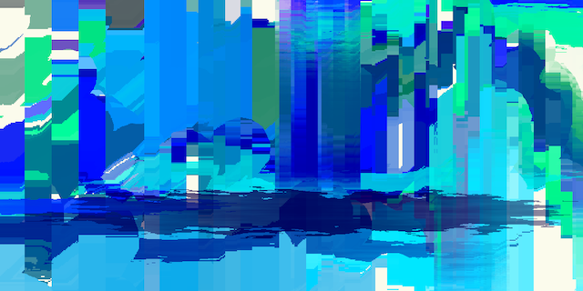
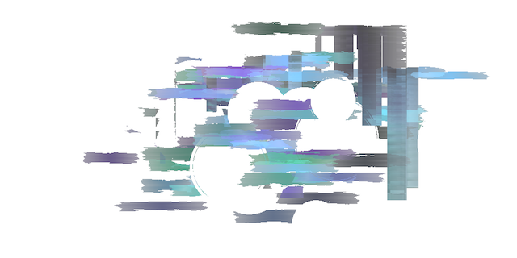

- Realtime digital video, Custom C++ software
Though stochastic process, a dynamic equilibrium can be achieved. By transition between three different action states (generation, modifcation, and destruction) governed by transition probability matrix, canvas continuously changes. However, the overall chracteristic determined by the transition probability matrix is maintained throughout the process. Different visual styles are tested but the idea in common is generation as horizontal component, modification as vertical component, and destruction as circular and erasing component.
 